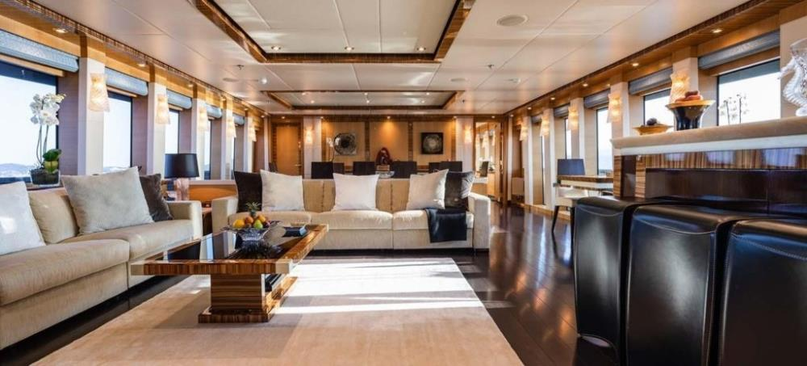
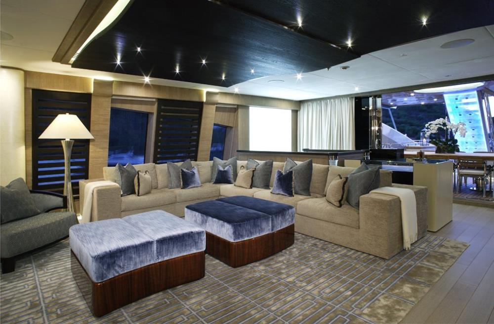
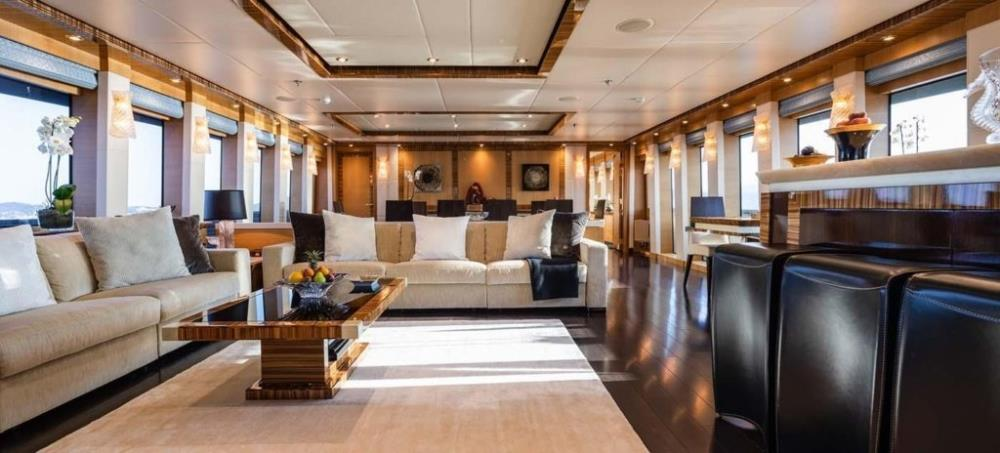
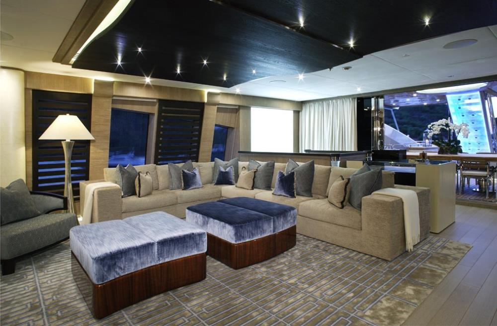

Yate NORD: El gigante de Lürssen que redefine el lujo
Diseño y Construcción
Diseño Exterior
El NORD destaca por una imponente y agresiva silueta, diseñada para combinar elegancia y poder. Sus líneas aerodinámicas no solo proyectan sofisticación sino que optimizan la navegación en largas travesías, gracias al talento de Nuvolari Lenard.

Diseño Interior
El interior del NORD es un oasis flotante de lujo. Con ambientes que mezclan tonos cálidos, maderas nobles, mármoles y tecnología integrada, ofrece el máximo confort a bordo. Sus múltiples salones, suites y zonas recreativas garantizan privacidad y esplendor a partes iguales.


 



Tecnología y Avances
El NORD es un prodigio tecnológico. Equipado con sistemas avanzados de navegación, estabilizadores de última generación y un puente de mando con tecnología integrada, es capaz de realizar travesías transoceánicas con eficiencia y seguridad incomparables. Además, cuenta con helipuerto, garaje para tenders y vehículos de exploración.
Sistema de propulsión Azipod